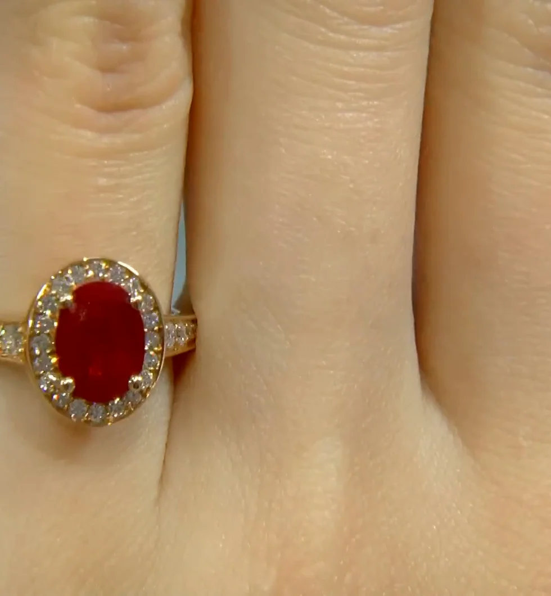
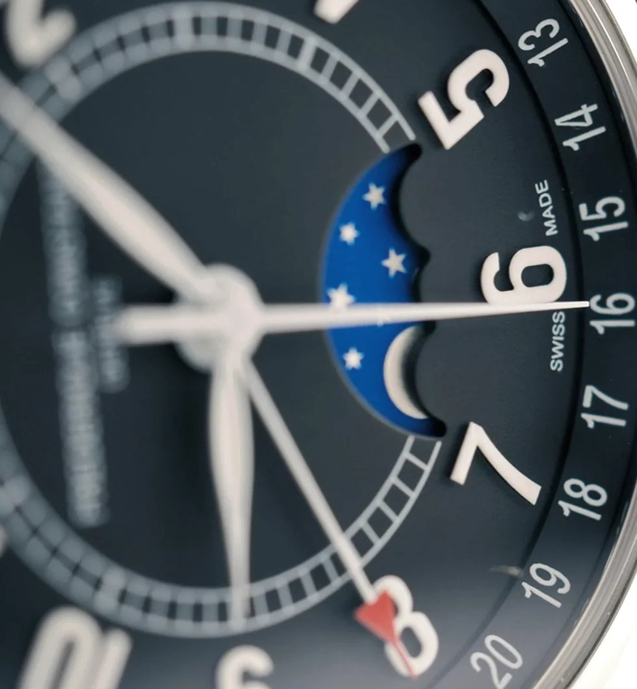
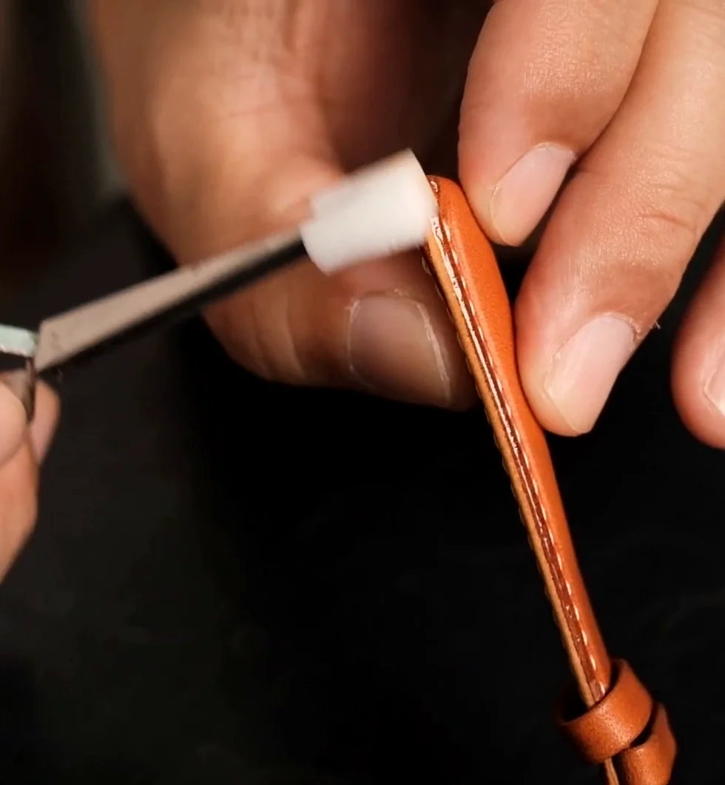
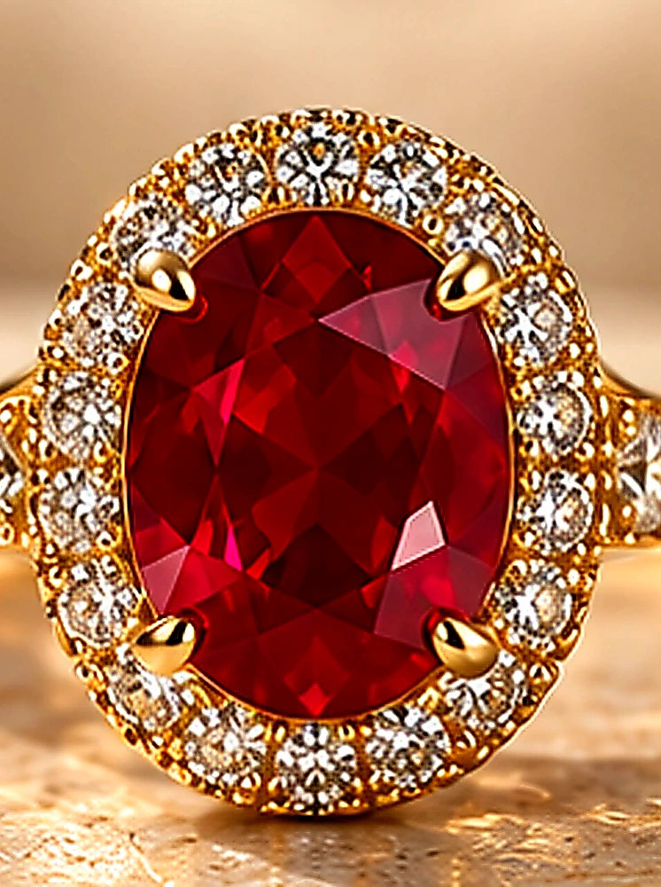
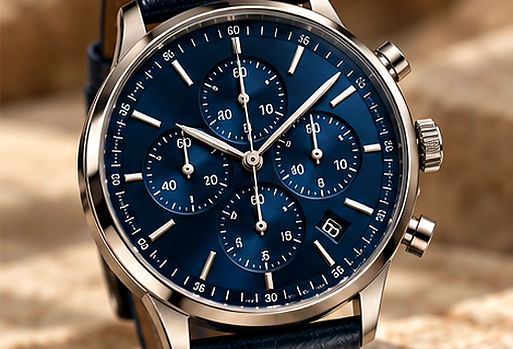
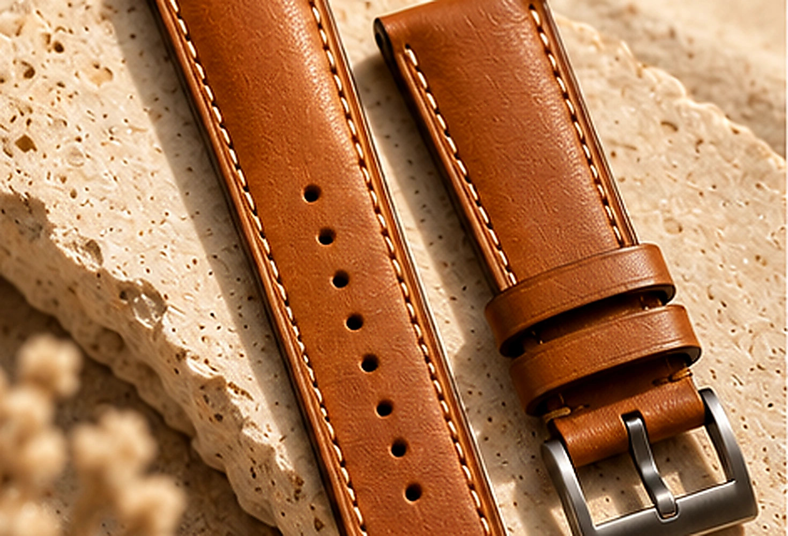

Pieces with
a point of view.
Explore designer rings, bespoke watches and leather watch straps, with a closer look at the details that make each piece personal.
EXPLORE THE COLLECTIONSDesigner rings.
For moments worth marking, and the everyday in between.

Bespoke watches.
From the dial to the strap, details make a watch feel personal.

Leather watch straps.
Colour, texture and stitching: a finishing touch with character.

The Curated Edit.
Three ways to make something your own. From a meaningful ring to a timepiece or the leather that makes it yours.


HOROLOGY Bespoke watches. EXPLORE WATCHES
LEATHERWORK Leather straps. EXPLORE STRAPSQuiet in form. Remarkable in detail.
DISCOVER THE ATELIERLet’s begin your story.
Have a piece in mind, or a question about the collections? We’d love to hear from you.
SEND AN ENQUIRYSelected pieces can be purchased through the studio’s approved external checkout flow once links are connected. For now, use the enquiry form for availability and bespoke requests.
Use the image to zoom, or the arrows to browse. Press Esc to close.